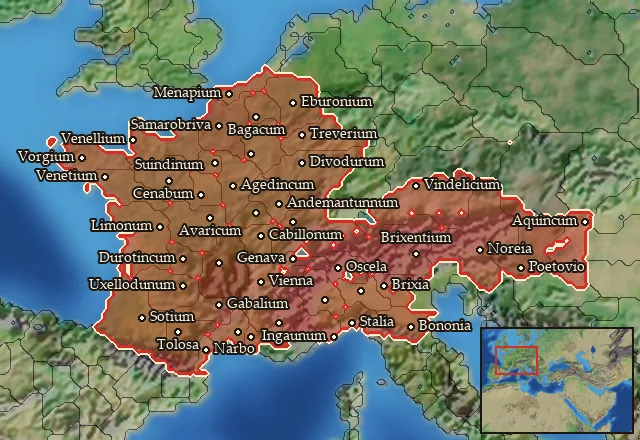

RTR: Imperium Surrectum
RTR: Imperium SurrectumMercenary Gaesatae


Mercenary. Hired from a regional pool, not recruited from a building.
Class: spearmen · Category: infantry · Men per unit: 40
Description
These Celts were warriors, respected by all major powers of the Mediterranean. They hired themselves out as mercenaries, sometimes fighting on both sides in the great battles of the times. For years the chieftains and their followers ravaged the western half of Asia Minor, as allies of one or another of the warring princes. Without any serious opposition, they sided with the renegade Seleucid prince Antiochus Hierax, in his attempt to defeat king Attalus I of Pergamon (241-197 BC). Instead, the Hellenised cities united under his banner, and Attalus inflicted several severe defeats upon the Galatians. Around 232 BC they were forced to settle permanently and to confine themselves in the region to which they had already given their name.
Stats
| Rank in roster | ||
|---|---|---|
| Men per unit | 40 | ███······· 31% |
| Attack | 17 | █████████· 90% |
| Charge bonus | 31 | █████████· 92% |
| Defence | 28 | ████······ 38% |
| · armour | 2 | █········· 13% |
| · defence skill | 21 | █████····· 54% |
| · shield | 5 | ██████···· 58% |
| Morale | 15 | █████████· 90% |
| Discipline | Normal | |
| Training | Untrained | |
| Upkeep per turn | 697 dn | ██████···· 64% |
Weapons
| Primary | Secondary | Primary | Secondary | Primary | Secondary | Primary | Secondary | ||||
|---|---|---|---|---|---|---|---|---|---|---|---|
| Attack | 17 | — | Charge bonus | 31 | — | Type | melee · blade | — | Damage | piercing | — |
| Properties | Light spear (braced against cavalry charges from the front) · +8 attack against cavalry | — |
Defence
| Primary | Secondary | Primary | Secondary | Primary | Secondary | Primary | Secondary | ||||
|---|---|---|---|---|---|---|---|---|---|---|---|
| Total | 28 | — | Armour | 2 | — | Defence skill | 21 | — | Shield | 5 | — |
Condition and terrain
| Hit points | 1 | Ground: scrub / sand / forest / snow | -2 / 0 / -4 / 0 | Charge distance | 30 | Formations | Square |
Technical stats
| Time between blows (primary / secondary) | 2.5 s / — | Extra fatigue in hot climates | 0 | Collision mass per man (1.0 is normal) | 0.92 | Spacing between men: close / loose | 1.1 × 1.3 m / 2.2 × 2.6 m |
| Default ranks | 5 |
In battle: Can hide in long grass · Can sap · Frighten nearby enemy infantry · Warcry improves attack · Very good stamina
Where to hire it
Mercenaries are hired from a regional pool, not recruited from a building. This unit is offered by 4 pools covering 44 regions, at 5,184 dn to hire and 3 experience.
Mercenary pools: Alps Rhaetia Noricum · Cisalpine Gaul · Gauls · Western Balkans

At least one of those pools sells to any faction that has an army in range, with no faction restriction.
The 44 regions where this unit appears in a mercenary pool
Aeduia · Allobrogia · Ambiana · Aquitania · Arecomicia · Arvernia · Biturigia · Boiaea · Cadurcia · Carnutia · Cenomania · Cenomania-Aulercia · Eburonia · Elysicea · Eraviscia · Gabalia · Genuatea · Ingaunia · Insubria · Lemannus Inferior · Lemovicia · Lepontia · Lingonia · Mandubia · Mediomatricia · Menapia · Nervia · Noricum · Osismia · Parisia · Pictonia · Remia · Rhaetia · Salluvia · Senonia · Sequania · Taurinia · Tauriscia · Tectosagia · Treveria
…and 4 more.